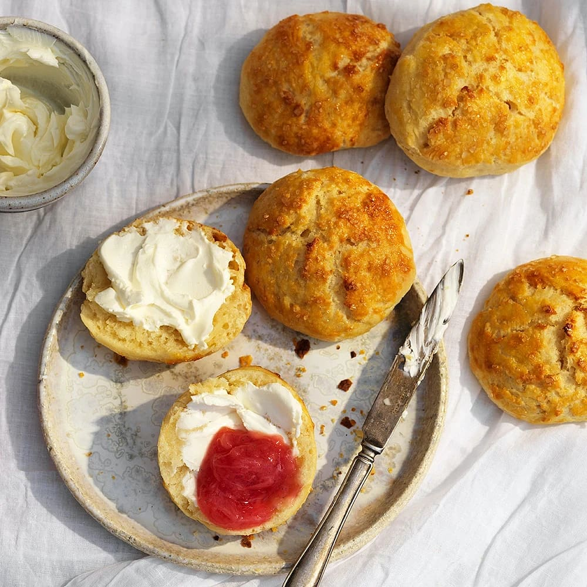

Scones - 2 personer

Ingredienser:
- 0,5 dl mjölk
- 50 g jäst
- 6 dl vetemjöl
- 2 tsk salt
- 3 dl rågmjöl till utbakning
Instruktioner:
- Smula sönder jästen
- Blanda i mjölken och vetemjölet
- Tillsätt saltet
- Arbeta ihop degen
- Fördela degen på 6 bullar
- Lägg kakorna på en lättsmord plåt
- Grädda 8-10 minuter i 200 grader
Servera ihop med ost och marmelad!